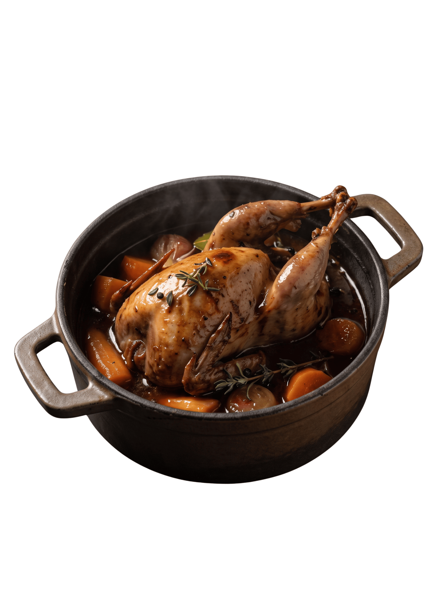
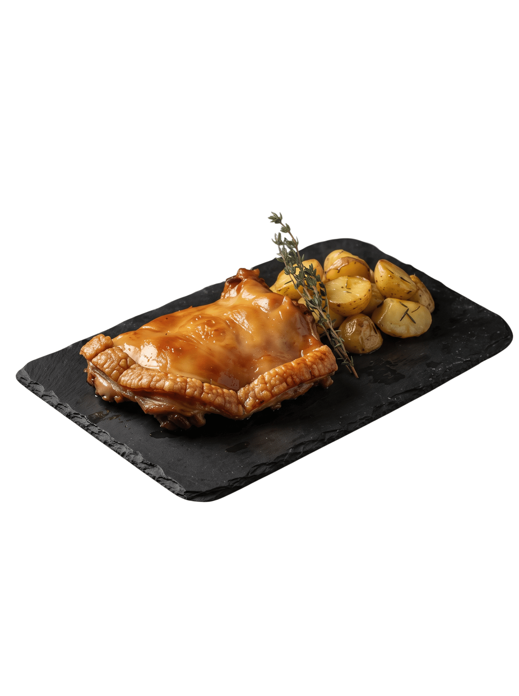
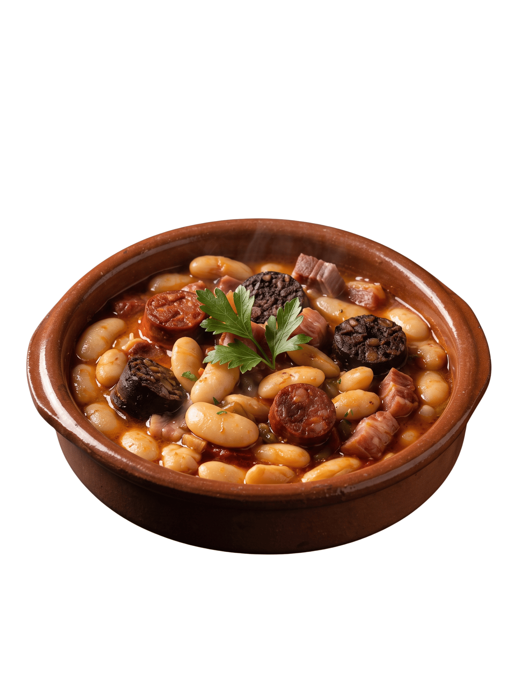
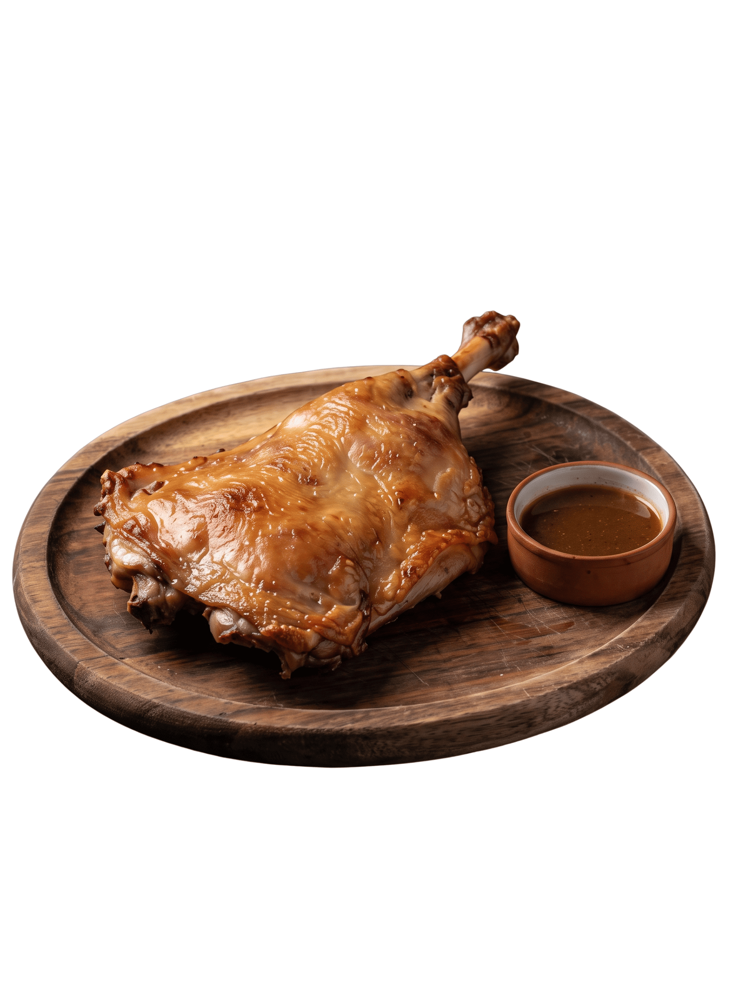
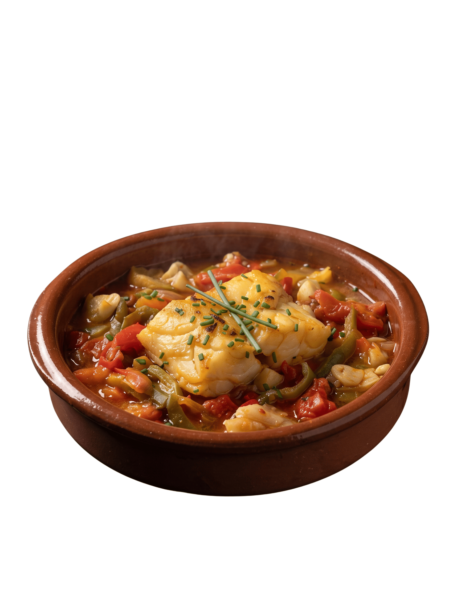
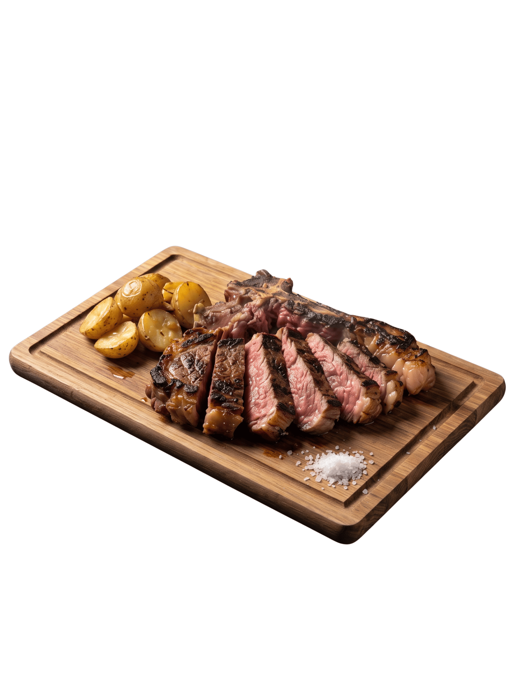

01PLATO PRINCIPAL · 01
NUESTRA CARTA
Buenos ingredientes, platos llenos de sabor y momentos para disfrutar.

01PLATO PRINCIPAL · 01

02PLATO PRINCIPAL · 02

03PLATO PRINCIPAL · 03

04PLATO PRINCIPAL · 04

05PLATO PRINCIPAL · 05

06PLATO PRINCIPAL · 06
.png) 07
07PLATO PRINCIPAL · 07
Una carta sencilla, con mucho sabor. ●